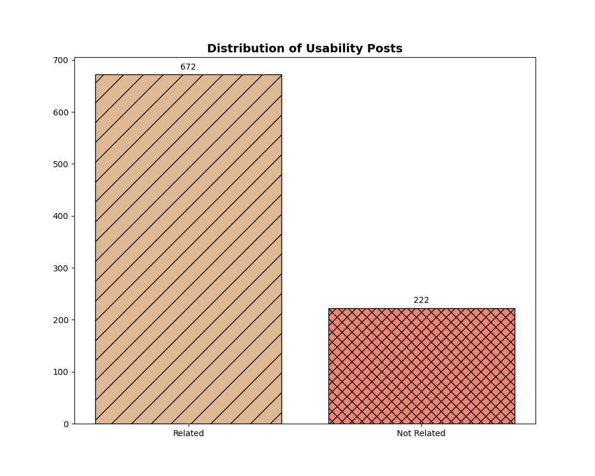
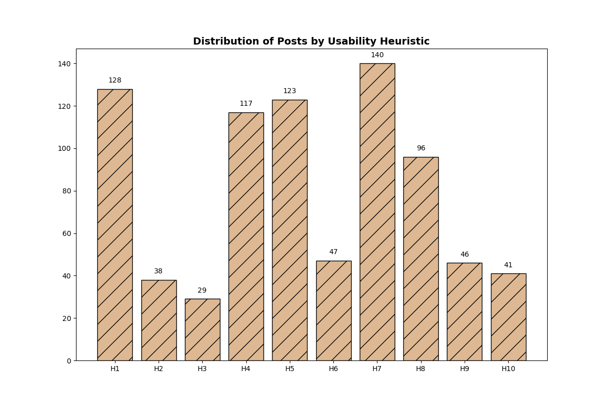

/ Abstract
The study presents Nielsen's heuristics as more than theoretical constructs; they are practical tools embedded within the discussion of developers dealing with usability issues. Our analysis of Stack Overflow posts offers a window into the practical challenges and considerations that pervade today's software development, demonstrating a solid connection between these time-tested heuristics and the lived experiences of developers. As technology progresses, the adaptability of heuristics will continue to be pivotal in guiding the creation of user-centric software interfaces.
/ Background
The study presents Nielsen's heuristics as more than theoretical constructs; they are practical tools embedded within the discussion of developers dealing with usability issues. Our analysis of Stack Overflow posts offers a window into the practical challenges and considerations that pervade today's software development, demonstrating a solid connection between these time-tested heuristics and the lived experiences of developers. As technology progresses, the adaptability of heuristics will continue to be pivotal in guiding the creation of user-centric software interfaces.
/ Study Design
This empirical study examined a substantial number of discussions on Stack Overflow, specifically aligning them with Jakob Nielsen's usability heuristics. The study revealed a meaningful alignment of usability-related issues within software development discussions with these heuristics. Significantly, the heuristics concerning flexibility and efficiency of use surfaced most prominently, highlighting their essential role in addressing usability challenges in current development contexts. This correlation emphasizes Nielsen's sustained applicability as a tool for analyzing usability challenges and their integration into software development discussions.
/ Results


This empirical study examined a substantial number of discussions on Stack Overflow, specifically aligning them with Jakob Nielsen's usability heuristics. The study revealed a meaningful alignment of usability-related issues within software development discussions with these heuristics. Significantly, the heuristics concerning flexibility and efficiency of use surfaced most prominently, highlighting their essential role in addressing usability challenges in current development contexts. This correlation emphasizes Nielsen's sustained applicability as a tool for analyzing usability challenges and their integration into software development discussions.
/ Conclusion
This empirical study examined a substantial number of discussions on Stack Overflow, specifically aligning them with Jakob Nielsen's usability heuristics. The study revealed a meaningful alignment of usability-related issues within software development discussions with these heuristics. Significantly, the heuristics concerning flexibility and efficiency of use surfaced most prominently, highlighting their essential role in addressing usability challenges in current development contexts. This correlation emphasizes Nielsen's sustained applicability as a tool for analyzing usability challenges and their integration into software development discussions.